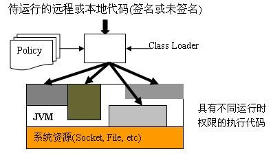
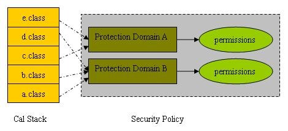
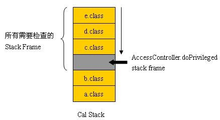
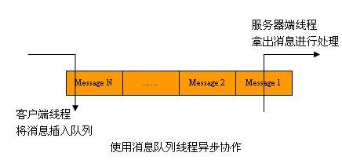
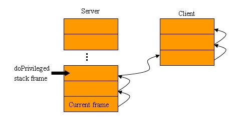

在 Java 2 之前的版本，运行时的安全模型使用非常严格受限的沙箱模型（Sandbox）。读者应该熟悉，Java 不受信的 Applet 代码就是基于这个严格受限的沙箱模型来提供运行时的安全检查。沙箱模型的本质是，任何本地运行的代码都是受信的，有完全的权限来存取关键的系统资源。而对于 Applet，则属于不受信的代码，只能访问沙箱范围内有限的资源。当然，您可以通过数字签名的方式配置您的 Applet 为受信的代码，具有同本地代码一样的权限。
从 Java 2 开始，Java 提供了基于策略（Policy）与堆栈授权的运行时安全模型，它是一个更加细粒度的存取控制，易于配置与扩展，其总体的架构如图 1 所示：
图 1. Java 2 安全模型

简单来讲，当类由类装载器（Class Loader）载入到 JVM 运行，这些运行时的类会根据 Java Policy 文件的配置，被赋予不同的权限。当这些类要访问某些系统资源（例如打开 Socket、读写文件等），或者执行某些敏感的操作（例如存取密码）时，Java 的安全管理器（ava.lang.SecuirtyManager）的检查权限方法将被调用，检查这些类是否具有必要的权限来执行该操作。
在继续深入讨论之前，我们先来澄清下面的几个概念：
- 策略，即系统安全策略，由用户或者管理员配置，用来配置执行代码的权限。运行时的 java.security.Policy 对象用来代表该策略文件。
- 权限，Java 定义了层次结构的权限对象，所有权限对象的根类是 java.security.Permission。权限的定义涉及两个核心属性：目标（Target）与动作 (Action)。例如对于文件相关的权限定义，其目标就是文件或者目录，其动作包括：读，写，删除等。
- 保护域，保护域可以理解为具有共同的权限集的类的集合。
在 Java 2 里，权限实际上是被赋予保护域的，而不是直接赋给类。权限、保护域和类之间的映射关系如图 2。
图 2. 类，保护域，权限的映射关系

如图 2 所示，当前运行时堆栈是从 a.class 到 e.class。在运行时堆栈上的每一帧（Stack Frame）都会被 Java 划归为某个保护域（保护域是 Java 根据 Policy 文件配置构建出来的）。Java 的安全管理器在执行权限检查时，会对堆栈上的每个 Stack Frame 做权限检查，当且仅当每个 Stack Frame 被赋予的权限集都暗含（Imply）了所要求的权限时，该操作才被允许执行，否则 java.security.AccessControlException 异常将被抛出，该操作执行失败。
有关 Java 2 安全模型，有几点需要特别说明：
- 该模型是基于堆栈授权的，这在多线程的环境下，同样适用。例如当父线程创建了子线程，子线程的执行被看作是父线程执行的继续，所以 Java 的安全管理器在权限检查时，所检查的运行时堆栈，既包括当前子线程的，也包括从父线程那里继承过来的运行时堆栈。这意味着，用户不可能通过线程的创建来获得额外的权限。
- Java 的开发者可以使用 AccessController.doPrivileged 来优化权限检查带来的额外性能开销。如图 3 所示，Java 的权限检查将从堆栈的顶部开始，逐一向下，直到碰到 doPrivileged 的方法调用，或者到达堆栈底部为止。使用 doPrivileged 可以避免不必要的栈遍历（Stack Traverse），提高程序的性能。
- 在该模型中，有一个特殊的保护域，系统域（System Domain）。所有被 null类装载器所装载的类都被称为系统代码，其自动拥有所有的权限。而且，所有的重要的受保护的外部资源，如文件系统、网络、屏幕、键盘等只能通过系统代码获得。
图 3. doPrivileged Stack Frame

接下来，本文会给出一个简单的示例，然后我们根据这个示例，进一步深入，来创建一个线程间安全协作的应用。
我们的示例很简单：客户端调用 LogService 提供的 API，把 Message 写入到磁盘文件。
清单 1. 客户端程序
package sample.permtest.client;
……
public class Client {
……
public static void main(String[] args) {
//构造消息日志，使用LogService将其写入c:\\paper\\client\\out.tmp文件。
Message message = new Message("c:\\paper\\client\\out.tmp",
"Hi, this is called from client"+'\n');
LogService.instance.log(message);
//构造消息日志，使用LogService将其写入c:\\paper\\server\\out.tmp文件。
message = new Message("c:\\paper\\server\\out.tmp",
"Hi, this is called from client"+'\n');
LogService.instance.log(message);
}
}
|
清单 2. LogService
package sample.permtest.server;
……
public class LogService {
……
public void log(Message message) {
final String destination = message.getDestination();
final String info = message.getInfo();
FileWriter filewriter = null;
try
{
filewriter = new FileWriter(destination, true);
filewriter.write(info);
filewriter.close();
}
catch (IOException ioexception)
{
ioexception.printStackTrace();
}
}
}
|
如清单 1、2 所示，这就是一个普通的 Java 应用程序。我们把这个程序放在 Java 的安全模型中执行。Client 类放在 client.jar JAR 包里，而 LogService 类放在 server.jar JAR 包里
首先我们使用 keytool 工具来生成我们需要的 keystore 文件，以及需要的数字证书，如清单 3 所示。
清单 3. 生成 keystore 文件及其数字证书
>keytool -genkey -alias client -keyalg RSA -keystore C:\paper\.keystore >keytool -genkey -alias server -keyalg RSA -keystore C:\paper\.keystore |
在清单 3 中，我们生成了 C:\paper\.keystore 文件，使用 RSA 算法生成了别名为 client 与 server 的两个数字证书。（注 : 为方便起见，keystore 与 client，server 证书的密钥都是 111111）
我们使用如清单 4 所示的命令来签名 client.jar 与 server.jar。
清单 4. 签名 JAR 文件
>jarsigner.exe -keystore C:\paper\.keystore
-storepass 111111 c:\paper\client.jar client
>jarsigner.exe -keystore C:\paper\.keystore
-storepass 111111 c:\paper\server.jar server
|
在清单 4 中，我们使用了别名为 client 的数字证书来签名 client.jar 文件，使用别名为 server 的数字证书来签名 server.jar 文件。
使用图形化的工具 policytool.exe 创建清单 5 所示的 Policy 文件。
清单 5. Policy 文件
/* AUTOMATICALLY GENERATED ON Thu May 14 15:40:25 CST 2009*/
/* DO NOT EDIT */
keystore "file:////C:/paper/.keystore";
grant signedBy "client" {
permission java.io.FilePermission "c:\\paper\\client\\*","read,write";
};
grant signedBy "server" {
permission java.security.AllPermission;
};
|
Policy 文件指出，所有被”client”签名的代码具有读写” c:\\paper\\client\\”目录下所有文件的权限，而所有被”server”签名的代码具有所有的权限。Java 将根据该策略文件按照签名者创建相应的保护域。
一切就绪，我们运行代码，如清单 6 所示。
清单 6. 运行程序
>java -Djava.security.manager
-Djava.security.policy=my.policy -classpath client.jar;server.jar
sample.permtest.client.Client
|
有两个运行时选项特别重要，-Djava.security.manager 告诉 JVM 装载 Java 的安全管理器，进行运行时的安全检查，而 -Djava.security.policy 用来指定我们使用的策略文件。
运行的结果如清单 7 所示。
清单 7. 运行结果
Exception in thread "main" java.security.AccessControlException: access denied (
java.io.FilePermission c:\paper\server\out.tmp write)
at java.security.AccessControlContext.checkPermission(Unknown Source)
at java.security.AccessController.checkPermission(Unknown Source)
at java.lang.SecurityManager.checkPermission(Unknown Source)
at java.lang.SecurityManager.checkWrite(Unknown Source)
at java.io.FileOutputStream.<init>(Unknown Source)
at java.io.FileOutputStream.<init>(Unknown Source)
at java.io.FileWriter.<init>(Unknown Source)
at sample.permtest.server.LogService.log(LogService.java:19)
at sample.permtest.client.Client.main(Client.java:16)
|
客户端运行后，第一条消息成功写入 c:\\paper\\client\\out.tmp 文件，而第二条消息由于没有 c:\paper\server\out.tmp 文件的写权限而被拒绝执行。
前一节本文给出的示例，如果放在线程间异步协作的环境里，情况会变得复杂。如图 4 所示。
图 4. 线程的异步协作

如图 4，在这样的情景下，客户端线程的运行时堆栈完全独立于服务器端的线程，它们之间仅仅通过共享的数据结构消息队列进行异步协作。例如：当客户端线程放入 Message X，而后，服务器端的线程拿到 Message X 进行处理，我们仍然假设 Message X 是希望服务器端线程将消息写入 c:\paper\server\out.tmp 文件。在这个时候，服务程序怎样才能确保客户端具有写入 c:\paper\server\out.tmp 文件的权限？
Java 提供了基于线程协作场景的解决方案，如清单 8 所示：
清单 8. 线程协作版本的 LogService
package sample.permtest.thread.server;
……
public class LogService implements Runnable
{
……
public synchronized void log(Message message)
{
//该方法将在客户端线程环境中执行
//在消息放入队列的时候，我们把客户端线程的执行环境通过
//AccessController.getContext() 得到，
//并及时保存下来。
message.m_accesscontrolcontext = AccessController.getContext();
_messageList.add(message);
notifyAll();
}
……
//从队列中取出消息，并逐一处理
public void run()
{
while (true)
{
Message message = null;
try
{
message = retrieveMessage();
}
catch (InterruptedException interruptedexception)
{
break;
}
final String destination = message.getDestination();
final String stringMessage = message.getInfo();
AccessController.doPrivileged
(
new PrivilegedAction()
{
public Object run()
{
FileWriter filewriter = null;
try
{
filewriter = new FileWriter(destination, true);
filewriter.write(stringMessage);
filewriter.close();
}
catch (IOException ioexception)
{
ioexception.printStackTrace();
}
return null;
}
},
message.m_accesscontrolcontext
//将客户端线程当时的执行环境传入，进行权限检查。
);
}
}
}
|
消息类的 m_accesscontrolcontext 成员变量是一个 AccessControlContext 对象，它封装的当前线程的执行环境快照，我们可以通过调用 AccessController 的 getContext 方法获得。安全的线程协作工作原理如图 5 所示。
图 5. 线程异步协作权限检查路径

图 5 中的箭头指示了 Java 的安全管理器权限检查的路径，从当前的帧 (Frame) 开始，沿着服务器端线程的运行时堆栈检查，直到碰到了 AccessController.doPrivileged 帧。由于我们在调用 doPrivileged 方法时，传入了 m_accesscontrolcontext，也就是客户端线线程在往消息队列里插入消息时的执行环境，所以 Java 的安全管理器会跳转到该执行环境，沿着客户端插入消息时的执行堆栈逐一检查。
在本节线程版本的 Log 服务实现中，Client 类在 sample.permtest.thread.client 包里，该包被导出为 thread_client.jar JAR 包，而 LogService 在 sample.permtest.thread.server 包里，该包被导出为 thread_server.jar JAR 包。而有关这部分的包签名与上节类似，使用了与上节相同的数字证书。
关于完整的源代码，读者可以在本文后面的资源列表中下载。
本文通过示例，详尽描述了 Java 2 运行时的安全模型特性，以及基于该模型，如何构建安全的线程协作应用。值得一提的是，当您的 Java 应用使用的 Java 2 所提供的运行时安全模型，程序性能的降低是必然的，因为我们已经看到，Java 2 的安全模型是基于堆栈授权的，这意味着，每一次 Java 安全管理器检查权限方法的执行，都会遍历当前运行时行堆栈的所有帧，以确定是否满足权限要求。所以您的设计一定要在安全与性能之间取舍。当然，当您在应用了 Java 的安全模型后，您仍然有机会进行性能的优化，比如使用 doPrivileged 方法去掉不必要的堆栈遍历，更进一步，您可以根据自己应用的特点，通过继承 java.lang. SecurityManager 类，来开发适合自己应用的安全管理器。
| 描述 | 名字 | 大小 | 下载方法 |
|---|---|---|---|
| 本文示例代码 | src.zip | 16 KB | HTTP |
学习
-
参阅“developerWorks Java 安全专题”：全面了解与掌握 Java 平台安全技术的最佳资源。
-
参阅“developerWorks Java 多线程与并发编程专题”：汇集了与 Java 多线程与并发编程相关的文章和教程，帮助读者理解 Java 并发编程的模式及其利弊，向读者展示了如何更精确地使用 Java 平台的线程模型。
-
developerWorks Java 技术专区：查找数百篇有关 Java 编程各方面的文章。
获得产品和技术
- 下载 IBM 软件试用版，体验强大的 DB2?，Lotus?，Rational?，Tivoli?和
WebSphere?软件。
讨论
- 查看 developerWorks
博客 的最新信息。